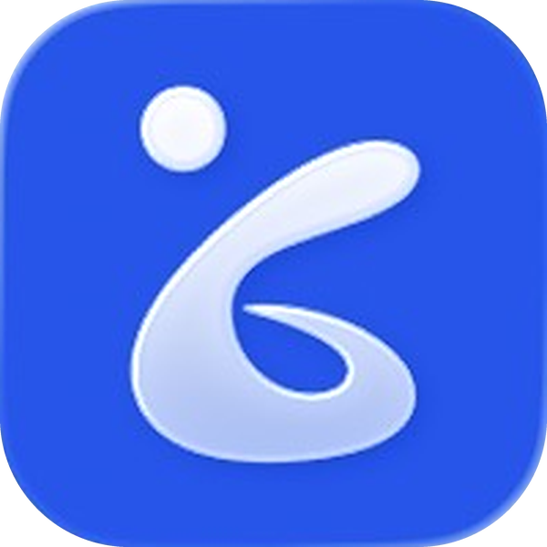

«Дайте ваш номер»
После приёма пациент просит контакт — отказать неудобно.

Пациенты и так пишут вам. Консилиум превращает эту переписку в оплачиваемую работу — с границами, протоколом и ИИ-ассистентом.
Пациенты просят номер, а потом пишут — вечером, в выходные, в отпуске. Отказать неловко, а платить никто не предлагает.
После приёма пациент просит контакт — отказать неудобно.
Один вопрос превращается в переписку без начала и конца.
Время и знания уходят бесплатно — из вежливости.
Отвечаете на всё, а благодарят единицы.
Совет в мессенджере нигде не зафиксирован — выше риск ошибки.
Выгорание и работа, которая не приносит дохода.
Отправляйте пациента не в личный мессенджер, а в свой профиль в Консилиуме. Тот же разговор — только оплаченный.
«Вот мой контакт в приложении Консилиум»
Специализированный медицинский ИИ, обученный на медицинских учебниках. Он помогает — решение всегда за вами.
Проверьте свои выводы по медицинским показаниям — и убедитесь, где вы правы
Анализы, снимки и сканы документов — в работе
Работает во всех областях медицины
Сверка выводов и протокол каждой консультации
Протокол формируется автоматически — без ручного оформления и лишней бюрократии.
Жалобы, данные пациента и ваши рекомендации.
Видно, что и когда было сказано.
Структура и сверка с ИИ — на каждой консультации.
Пациент сам выбирает формат и оплачивает его в приложении. Вы — консультируете.
Чат с пациентом открыт 24 часа — один вопрос, разобранный до конца.
Месяц переписки с пациентом — постоянная связь и регулярный доход.
На приёме или после него — как обычно
«Мой контакт — в приложении Консилиум»
Разовая консультация или подписка — и оплачивает
В рабочем чате, с ИИ-ассистентом и протоколом
Та же переписка с пациентами — но по правилам, которые устраивают вас.
Оплата за переписку, которую вы и так ведёте
Чат по формату — 24 часа или месяц, а не бесконечно
Каждая консультация фиксируется автоматически
Сверка выводов, анализы, снимки и сканы
Пациенты и их история — в одном месте
Ваш профиль врача в приложении Консилиум
Начните получать оплату за консультации, которые вы и так даёте.
Расскажите о специализации и опыте.
Обсудим условия и создадим ваш профиль.
«Мой контакт — в приложении Консилиум».
Клинические решения принимает врач. ИИ-ассистент — инструмент поддержки, а не замена врачебного решения.